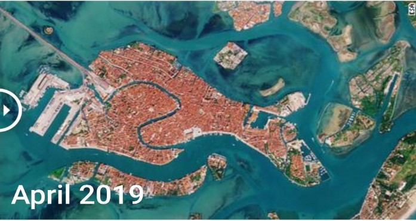
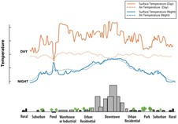

Human life comes to a standstill as many countries shut themselves off from the work due to the novel coronavirus disease pandemic (COVID-19) that hit the world severely in the first quarter of 2020. All types of industries, vehicle movement, and people's activity suddenly halted, perhaps for the first time in modern history. For a long time, it has been stated in various literature that the increased industrialization and anthropogenic activities in the last two decades polluted the atmosphere, hydrosphere, and biosphere. Since the industries and people's activities have been shut off for a month or more in many parts of the world, it is expected to show some improvement in the prevailing conditions in the aforementioned spheres of environment.
"The image shows differences in SPM concentration"
Beaches are one of the most important natural capital assets found in coastal areas. They provide services (land, sand, recreation, and tourism) that are critical to the survival of coastal communities and possess intrinsic values that must be protected from overexploitation. However, non-responsible use by people has caused many beaches in the world to present pollution problems. The lack of tourists, as a result of the social distancing measures due to the new coronavirus pandemic, has caused a notable change in the appearance of many beaches in the world. For example, Venice, Italy as shown below. In the longest freshwater lake in India, (as shown in the figure), the SPM estimated based on established turbidity algorithm from landsat-8 Oli images showed that the SPM concentration during the lockdown period decreased by 15.9% on average (range: −10.3% to 36.4%, up to 8 mg/l decrease) compared with the pre-lockdown period. Time series analysis of satellite image collections (April 2013 – April 2020) showed that the SPM quantified for April 2020 is the lowest for 11 out of 20 zones of the vembanad lake. When compared with preceding years, the percentage decrease in SPM for April 2020 is up to 34% from the previous minima.
From the most important environmental factors is the air quality. The air quality is generally defined as the degree to it which the air is free from pollution. Due to the newly coronavirus pandemic spread, governments have taken some procedures that are applied worldwide for example the longtime lockdown and the prohibition of travelling. Needless to say, this had some considerable impacts on air quality and air pollution. Because of the novel pandemic, transportation has partially stopped locally and globally. As a result of this, the outdoor air quality has been improving tremendously since the start of the lockdown. Also, workers in the majority of factories worldwide have been banned from going to their work resulting in decreasing factory gases’ emissions by 35%-60% in different countries.
there are many factors affecting the air quality, the most common factors are:
Basically, the aerosol index means the measure of difference between the backscattering of UV rays from an atmosphere that contains aerosols and a pure atmosphere backscattering. Aerosols are the colloidal substances enclosed by pressure and released as a fine spray by means of a propellant gas. Aerosols are commonly used in daily life. For example, the insecticides and the air fresheners. Due to COVID-19, the use of aerosols was reduced drastically whether on the local level or the global one.
Particular matter is the summation of all solid and liquid particles floating in the air which can be dust, pollen, smoke, or liquid droplets. They are tiny in general (<=2.5 microns). They could be hazardous and could lead to several diseases. They can simply penetrate into the living organism’s lung and cause severe damage. They also can be organic or inorganic. Due to COVID-19, the particular matter pollution has been reduced by 35% in china and many countries. The figure below shows the particular matter pollution (before the COVID-19) worldwide.
Particular matter pollution (oct.2012)
The greenhouse gases are the gases that cause the increasing of the greenhouse effect. They also cause many other hazards. Fortunately, COVID-19 has done something to deal with that. The main greenhouse gases’ emissions are resulted from factories. With factories being shut or inactive, the greenhouse emissions became much stable and less than anytime before.
In the presence of COVID-19, The emissions of nitrogen dioxide decreased by 60% in china and other countries, locally and globally, the emissions’ rate was reduced dramatically. The figure below shows the nitrogen dioxide emissions (before and after COVID-19).
NO2 emissions after COVID-19 (may.2020)
Carbon monoxide is from the most dangerous greenhouse gases, just inhaling a sufficient amount of it may cause instant death. As other greenhouse gases, the CO gas emissions was decreased obviously because of the COVID-19 combating procedures. The following map show its emissions (before and after COVID-19)
CO emissions before COVID-19 (sep.2019)
CO emissions after COVID-19 (may.2020)

Environmental issues are widespread around the globe not just locally. The most factor affecting the environmental changes is the human himself by his daily actions. From these environmental changes the wildfires that causes the death of many species of animals and also the hard reduction in the number of trees which on the long run causes an increase in the greenhouse gases percentages. So, after the COVID-19 pandemic and the current restrictions in different areas, most of the humans are following these restrictions trying not to be infected by the virus.
Wildfires in 2019 (before the spread of COVID-19) were really huge caused by many reasons which were natural such as lightening and high temperatures in these areas equipped by droughts. That leads to forest fires that are hard to put off due to the drought like in Australia bushfires that started in December 2019 and lasted to 2020. But this kind of wild fires are hard to control as they happen suddenly, so it is hard to take any precautions.
The doubt comes to humans’ activities toward forests like in the Amazon forests wildfires which was one of the most critical fires in the world was caused by deforestation which is a regular habit there as shown in the following figure captured from NASA World View (the red dots represent the fire in south America in July 2019). This fire started in June and ended in August 2019 that’s due to deforestation done by people there.
People who are living near forests continues their deforestation there without taking any precautions so the fires did not decrease significantly as shown in the following 2 photos that shows a comparison between the wildfire spots all over the world before and after the spread of COVID-19 where the fires decreased in some areas like Africa and in did not decrease in other areas like Australia and south America.
Before the spread of the virus (specifically in July 2019).
After the spread of the virus (specifically in April 2020)

Urban heat island is not a textual term but a term for a city that is warmer than its ocean due to its human-centered activity. The temperature difference at night is greater than during the day, and it becomes more noticeable when the wind is weak. Urban thermal islands appear most noticeable during summer and winter. Temperatures are attributed to increased absorption of sunlight by components that characterize urban areas such as concrete-tiled roads and floors, which have less light reflectance and higher heat capacity than those in nature
The average annual air temperature for a city with a population of one million people or more can be 1.8-5.4 degrees Fahrenheit (1-3 degrees Celsius) more than surrounding areas. In the evening, the difference can reach 22 degrees Fahrenheit (12 degrees Celsius). Surface temperatures vary more than air temperatures during the day, but they both are similar at night as shown in figure
it societies by increasing summer energy demand, air conditioning costs, air pollution and greenhouse gas emissions, heat-related illnesses and deaths, and water pollution all this data was collected after doing a lot of research on NASA and JAXA databases...... We deduced the term for urban heat island and knowing the most influencing factors in its formation. We found that polluted air is one of the most important factors that affect it according to graphs and images in the topic of air quality, so after the pandemic, Corona Virus decreased the level of pollution significantly, which led to a lack of formation of urban heat island In a major city, and the comparison and knowledge of the difference between after and before this pandemic have also been studied from the JAXA map NASA world view